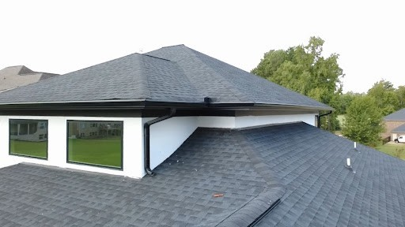

Description
The inspector shall inspect: The heating system and describe the energy source and heating method
using normal operating controls. And report as in need of repair electric furnaces which do not
operate. And report if inspector deemed the furnace inaccessible. The central cooling equipment
using normal operating controls. The fireplace, and open and close the damper door if readily
accessible and operable. Hearth extensions and other permanently installed components. And report
as in need of repair deficiencies in the lintel, hearth and material surrounding the fireplace, including
clearance from combustible materials.
The inspector is not required to: Inspect or evaluate interiors of flues or chimneys, fire chambers,
heat exchangers, humidifiers, dehumidifiers, electronic air filters, solar heating systems, solar heating
systems or fuel tanks. Inspect underground fuel tanks. Determine the uniformity, temperature, flow,
balance, distribution, size, capacity, BTU, or supply adequacy of the heating system. Light or ignite
pilot flames. Activate heating, heat pump systems, or other heating systems when ambient
temperatures or when other circumstances are not conducive to safe operation or may damage the
equipment. Override electronic thermostats. Evaluate fuel quality. Verify thermostat calibration, heat
anticipation or automatic setbacks, timers, programs or clocks. Determine the uniformity,
temperature, flow, balance, distribution, size, capacity, BTU, or supply adequacy of the cooling
system. Inspect window units, through-wall units, or electronic air filters. Operate equipment or
systems if exterior temperature is below 60 degrees Fahrenheit or when other circumstances are not
conducive to safe operation or may damage the equipment. Inspect or determine thermostat
calibration, heat anticipation or automatic setbacks or clocks. Examine electrical current, coolant
fluids or gasses, or coolant leakage. Inspect the flue or vent system. Inspect the interior of chimneys
or flues, fire doors or screens, seals or gaskets, or mantels. Determine the need for a chimney
sweep. Operate gas fireplace inserts. Light pilot flames. Determine the appropriateness of such
installation. Inspect automatic fuel feed devices. Inspect combustion and/or make-up air devices.
Inspect heat distribution assists whether gravity controlled or fan assisted. Ignite or extinguish fires.
Determine draft characteristics. Move fireplace inserts, stoves, or firebox contents. Determine
adequacy of draft, perform a smoke test or dismantle or remove any component. Perform an NFPA
inspection. Perform a Phase 1 fireplace and chimney inspection.
Heating system inspection will not be as comprehensive as that performed by a qualified heating,
ventilating, and air-conditioning (HVAC) system contractor. For example: identification of cracked heat
exchangers requires a contractor inspection. Report comments are limited to identification of common
requirements and deficiencies. Observed indications that further inspection is needed will result in
referral to a qualified HVAC contractor. The general home inspection does not include any type of
heating system warranty or guaranty. Inspection of heating systems is limited to basic inspection
based on visual examination and operation using normal controls. Report comments are limited to
identification of common requirements and deficiencies. Observed indications that further inspection
is needed will be referred to a qualified heating, ventilating, and air-conditioning (HVAC) contractor.
Inspection of heating systems typically includes (limited) operation and visual inspection of: the
heating appliance (confirmation of adequate response to the call for heat); proper heating appliance
location; proper or adequate heating system configuration; exterior cabinet condition; fuel supply
configuration and condition; combustion exhaust venting; heat distribution components; proper
condensation discharge; and temperature/pressure relief valve and discharge pipe (presence,
condition, and configuration).
Inspection of home cooling systems typically includes visual examination of readily observable
components for adequate condition, and system testing for proper operation using normal controls.
Cooling system inspection will not be as comprehensive as that performed by a qualified heating,
ventilating, and air-conditioning (HVAC) system contractor. Report comments are limited to
identification of common requirements and deficiencies. Observed indications that further inspection
is needed will result in referral to a qualified HVAC contractor. To avoid the potential for system
damage, the air-conditioning system will not be operated if the outside air temperature is below 65
degrees F (17 C).



WHAT THIS COULD MEAN: Flashing acts like an umbrella for the seams of your home. When rainwater runs down a roof valley or off an eave next to an exterior wall, missing kick-out or step flashings can direct high volumes of water straight into the wall assembly. Over time, this water could seep behind the stucco and siding, causing hidden wood rot, structural framing damage, or mold growth inside the wall cavities.
RECOMMENDATION: Have a qualified licensed roofing contractor evaluate all roof-to-wall transitions, headwall junctions, and gutter ends, and install proper step flashings and kick-out diverters integrated correctly with the exterior wall cladding.